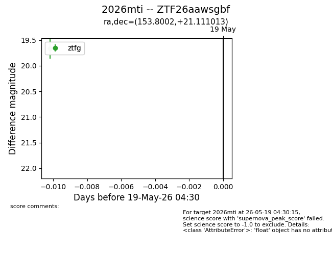
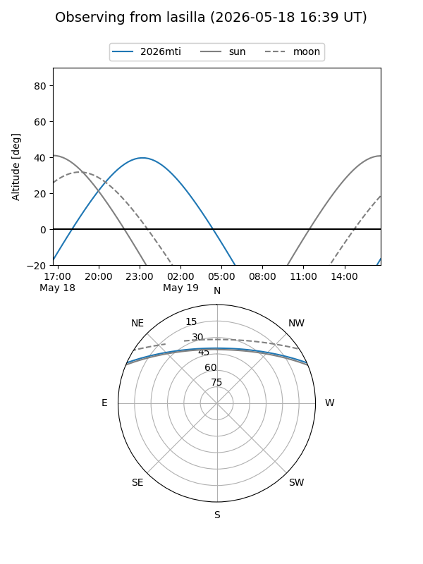
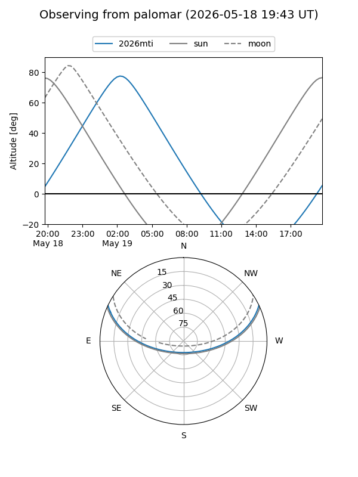

2026mti
Target 2026mti at 2026-05-19 04:31
Aliases and brokers:
FINK: link
Lasair: link
ALeRCE: link
TNS: link
YSE: link
alt names
ZTF26aawsgbf (ztf,fink_ztf)
2026mti (tns,yse)
Coordinates:
equatorial (ra, dec) = 153.8002,+21.11101
equatorial (HMS+DMS) = 10:15:12.05,+21:06:39.65
galactic (l, b) = (213.8825,+53.99092)
Flags:
Photometry:
last ztfg=19.66
1 ztfg detections
Lightcurve

Visibility


Additional plots